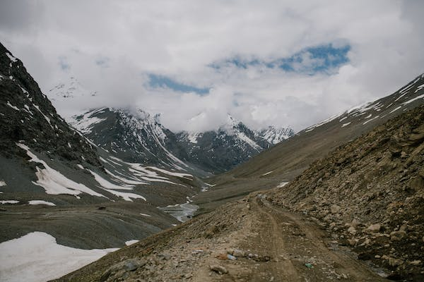

Also known as the Mountain Lake, Tso Moriri is one of the two most popular lakes in the Ladakh region of the northern Indian state of Jammu and Kashmir. While Pangong Tso is the more popular out of the two, it’s Tso Moriri which manages to take the breath away of the visitors with its tranquil beauty.
Located at an altitude of a whopping 4595 metres above the sea level, Tso Moriri is a calm and serene high altitude lake in Changtang Wildlife Sanctuary.
Tso Morriri lake

Ladakh, the erstwhile Buddhist kingdom is spectacularly jagged. Arid mountains, dramatically crowned rocky outcrops, picturesque gompas, meditational mani walls and multi hued flags are few of the many sites that exemplify the beauty of Ladakh. The well balanced traditional society of Ladakh has much to offer the West in terms of ecological awareness.
Ladakh is a magnificent and an unexplored wonderland of the Himalayas. It is one place that is considered as a heaven by everyone who is on a lookout to satiate their indomitable love for adventure. Besides trekking in Ladakh, you can indulge in a series of adventure sports such as biking, water rafting, safaris, etc. Also known as the ‘Land of Passes, Ladakh forms an alluring part of the state of Jammu and Kashmir in India.
Ladakh
Located at an elevation of 14,000 feet, Magnetic Hill in Ladakh is one of the most mysterious and intriguing places to visit in the country. This small cyclops hillock is said to be a place where the forces of gravity are defied, as it is here where vehicles seem to be pulled in an upwards direction on the hill. While there are several scientific theories that could debunk the mystery of this unique phenomenon, there is also the rather common local superstition, that states that the Magnetic Hill Road is a direct “stairway to heaven.”
The road to Magnetic Hill is home to a signboard that reads, “Magnetic Hill – the Phenomenon that defies Gravity,” along with a white box that asks you to park your vehicle there.
Magnetic Hill
One of the most beautiful parts of the moonscapes of Ladakh, Nubra Valley is a deep-cut gorge created by the combined effects of Shyok and Nubra (Siachen) rivers. A high altitude cold desert, Nubra Valley is actually an extension of the Tibetan Plateau (Qing-Zang Plateau) that starts in China and extends up to Ladakh. This valley in the plateau separates the Ladakh Range from the Karakoram Range. But more than anything, Nubra Valley is the most beautiful region in all of Ladakh. Home to wonders like the Diskit Monastery,Hunder Sand Dunes, Samstanling Gompa, Yarab Tso Lake, and the villages of Turtuk and Panamik.